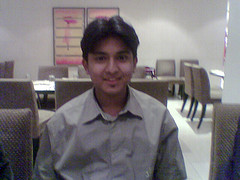

The Yearbook - Commemorating 2005-09!
Saurabh Sharma's profile information
Name - Saurabh SharmaBirthday - 05/02/1987
Email - saurabh.trailblazer@gmail.com
Address - house no. 203 sector 8 faridabad
Phone - 0219-2249625
Hobbies - Football.. 'Xbox'ing and li'l bit of cricket,
Memorabilia - has to be one of those DISCO's..
Testimonials written by Saurabh Sharma
Saurabh Sharma's Album

{kind=link}
Dat's me

First holi together...
Testimonials
Aniket Sharma wrote-Saurabh Sharma:
Saurabh bahut hi passionate banda hai. Ya kahen ki emotional, aur excitable. BLN ke office mein isne jo bakarchodi ki thi, vo aaj tak main bhool nahi sakta. Bahut saare kaandon mein ek saath rahe. Bade maje kiye hain ek saath. Ab ginaa nahi sakta, vo 244 NBH ki mastiyon se le ke Farewell treat mein saath jaane tak.
He's a decent cricketer, but after coming to college he developed a liking for football, which slowly got converted to a passion for Liverpool. This guy's freakish about all things Liverpool, and Gerrard is his idol. I can never forget your reactions during football matches, especially the Liverpool ones. I developed a liking for watching football only of late. Pehle hui hoti to aur bhi achchha time saath mein raha hota. Ours is the football wing after all. Khair...
He is often misjudged for his reactions. But in reality, Saurabh is an extremely intelligent, well-informed person who knows a lot not only about football, but about other things as well. Jayanthy Lal hai, Jayanthy ke under MS kar raha hai, which is a big deal in itself. Padhai mein slowly kaafi improve kiya hai isne apne aap ko. Thoda react jaldi kar jaata hai, is se log bura maan jaate hain. But banda dil ka bahut saaf hai. Saraswat ki chaahe jitni bhi mar leta ho, but I know ki ye dono kitne pakke dost hain. Kitni hi raatein goti-goti khel ke nikaali hain. A total gaming freak he is, and very good at it, too.News etc se bhi kaafi updated rehta hai, and has strong views about things, which shows that he does live outside his PC.
Tumhaari bandiyon se ghanton ghanto tak sporadic phone pe baat mere liye mystery hi rahegi. Kabhi saath baith ke discuss karenge isko bhi.
Dost react thoda kam karo, to vahi energy aur bhi achchhe kaamon mein lagegi. Aur baaki apan to yaheen hain... All the best for your MS

Tags: Group, wing, dilli, CVIT.
Atul Dwivedi wrote-
Saurabh bhai ...... FT9 .. in CS ... beta bahut Hero banate the CS mein .. dekh liya na isbaar ...

ye banda jo bhi karta hai .. poore dil se karta hai .. lekin jab kabhi mai isko CS mein marta tha gussa ho jata tha ..bhai abhi tak reason samajh mein nahi aaya ..jab tum marte the head shot uska kya be ???

Banda MS kar raha hai ... lolzzz ... kidding dude ..be serious and dhang se kar.. !!
Banda .. mast hai ..and apne group mein hi magan hai.....
Delhi waasi hai ........alag kisam ka banda hai ..
Cricket mein fodu hai hi ...FIFA ke liye pagal sa hai .. har time Football Football chillata rahta hai ..
Liverpool ka bahut bada fan hai ..
ab ho gaya .. baaki tu mehnati to hai nahi ki mai wo bhi likhun .. and na hi tu dedicated lagta .. lekin beta ..
suggestion hai lag jaa nahi ..to yahi rah jayega
Awesome
G. Rohit Bharadwaj wrote-
I came into this college with some pre-conceptions of Delhi ppl and Bingo.. he is exactly the way I pictured. Kool, stylish, bindaas and I-Am-The-King kind of attitude. I still remember asking the question to him "hi, why did you come to hyd from delhi?" his reply, "there are no good colleges in Delhi.." and he left, I was like "okay, he is not that arrogant as he appear
" and then the seating arrangement and we used to have some chats but our main common ground is the cricket where we are team mates both for aakash and batch. We jelled along well as a team and in the later years, he is the co-back bencher in various courses ranging from SE, Religion etc.. It is fun to listen his comments on his pals and profs
buddy, all the best for your future,
cheers,
rohit
Karan wrote-
Part 2
Over the years, we've moved our separate ways, but I still enjoy his company. The Ooty trip with him was awesome.. And you should have seen the chemistry Piyush and he shared
That was also when we leofied him like crazy about something related to Liverpool Remember that conversation? . And yeah, remember the car trip when everyone spoke about their crushes? And also, the Mocha waala outing! Along the way, this chap has also become lazy- I thought he'd be one chap very active in college affairs (I feel that hes a potential leader), but it was not to be. I was also disappointed that he stopped playing
cricket after winning us the IBCT finals last time around.. But then priorities change. I've also noticed that he is one chap who'd stick by his friends, always.
All the best in life, mate.
Person he represents: Shammi Kapoor in Junglee
Fav memory: All the mails we sent from your room in the first year.
Message for you: Dude, we still have our first year cricket challenge left! Chalo, khelne
Peace.
Karan wrote-
Part 1
My first memories with Saurabh date back to first year, my first few days in college. Saurabh was this cool chap who always had the choicest expletives on his lips
In fact, I learnt a lot from him.. "Beti c***" remains my favourite . We'd heard a lot about Saurabh from the seniors (among who he was very popular), and when I tried finding out, it turned out that he was my wingmate . Back then, it was these 4-5 guys who you kept hearing about "ki yeh aaj ragging de ke aaye hai".. Pagare, Chand, Daddu and Saurabh the most prominent ones. So, I started hanging out with him and realised the amount of fun he was! You HAVE to hear him scream.. Amazing that he starts off for the smallest of things  . I remember the discussions during Freshers we had in his room.. He had decided to stand for Mr. Fresher and told us "That he was going to act". Its unfortunate that he didn't reach the stage.. He would have been a very good candidate otherwise . I also remember Khatri, Saket, he and me persuading Piyush to stand for Mr. Fresher based on his singing talents And yeah, huge
. I remember the discussions during Freshers we had in his room.. He had decided to stand for Mr. Fresher and told us "That he was going to act". Its unfortunate that he didn't reach the stage.. He would have been a very good candidate otherwise . I also remember Khatri, Saket, he and me persuading Piyush to stand for Mr. Fresher based on his singing talents And yeah, huge
thanks to him for all those days he allowed me to use his cell phone for the super stuff he had
First year also marked the time when he started following football (He was a die hard cricket fan earlier, and is still a very good batsman) and it has been no looking back since then. Trust me, hes the biggest Liverpool fan on this planet! You have to hear him the way he talks about 'his' club.. The passion and enthusiasm is unbelievable! He always refers to Pool as "hum". He can go to any extend to support his club, and I was amazed by his plans to buy a part of it
. Seriously man, for the passion you have, hats off! 
(continued..)